How to use Jalan
Plan group trips in one place: countdown, plans, packing, documents, your budget and the group fund. Works offline. About 10 minutes to read.
Open JalanThe short version
- Install it once from Safari: Share, then Add to Home Screen.
- Add a trip with , pick the country, and add the people coming.
- Share the plan with your group as a PDF or WhatsApp message.
- Back up once a month in Settings. Your trips live only on your phone.
Install on your iPhone
You only do this once. Afterwards Jalan opens from your Home Screen like any app.
Open this page in Safari and tap Open Jalan at the top.It must be Safari. Chrome on iPhone can't install apps like this.
Tap the Share buttonThe square with an arrow pointing up, at the bottom of the screen.
Tap Add to Home ScreenCan't see it? Scroll down a little in that menu.
Tap AddThe pink Jalan icon appears on your Home Screen.
Always open Jalan from its Home Screen icon. It works without internet after the first time.
The Trips screen
This is the first thing you see. Your next trip is always at the top.
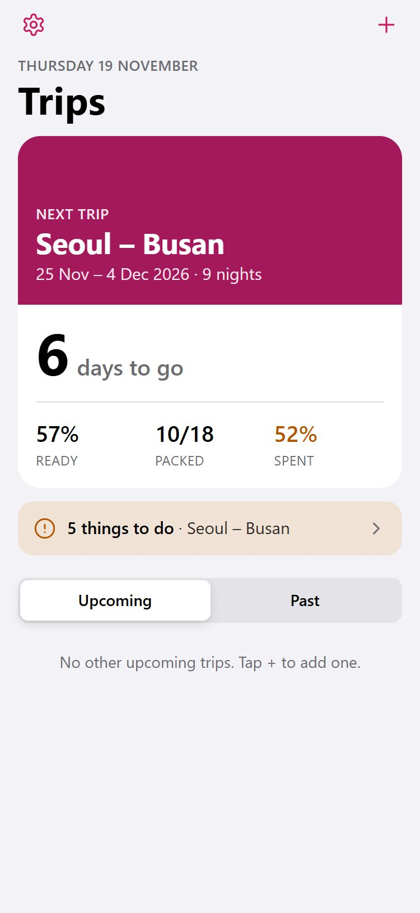
What you see
- Days to go
- How many days until the trip starts.
- Ready
- How prepared you are: packing, documents and to-dos together.
- Packed
- Items ticked off your packing list.
- Spent
- How much of your own budget you have used.
- Orange row
- Things to do, like missing documents or people who haven't paid into the fund. Tap it to see them all.
- Link trips?
- Shows when two trips run back to back. Tap it to show them as one journey.
Add a trip
You only need a country and the dates. Everything else is optional and can be changed later with Edit.
Tap at the top right of Trips
Type a Trip nameFor example "Cameron Highlands".
Tap Choose country, pick it, then type the cityMore stops? Tap Add destination.
Check the Domestic trip switchIt turns on by itself when you travel inside Malaysia. You can change it. See Domestic trips.
Pick the Start and End dates, and your own budget
Under Travellers, tap Add and type each nameNames only. Nobody gets an invite or needs the app.
Collecting money? Turn on Group fund and type the amount per personFor example "Collect RM 150 each". See Group fund.
Tap Create at the top right
Most common mistake: typing a city without tapping Choose country. If you forget, Jalan tells you and the button turns orange.
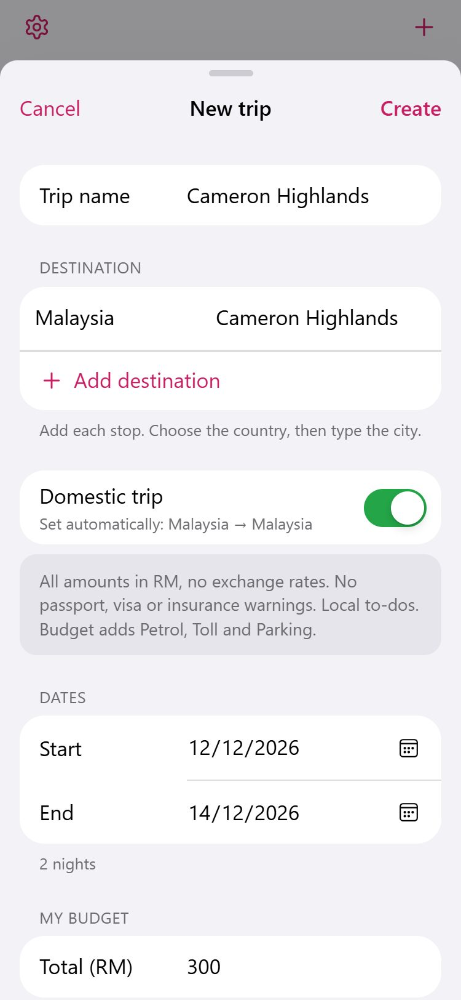
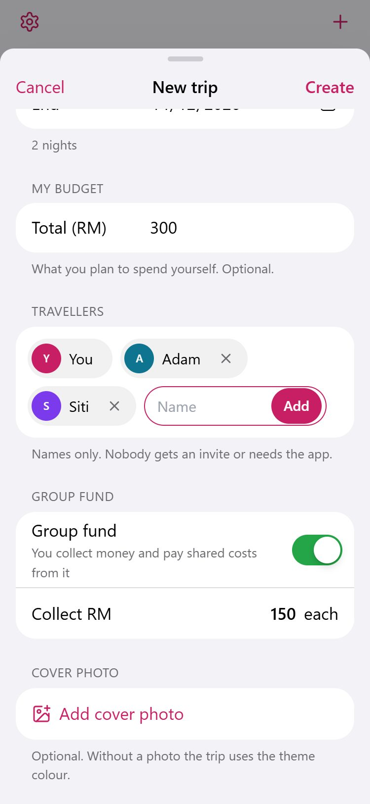
Inside your trip: 5 tabs
Tap a trip to open it. The tabs are at the bottom. Trips at the top takes you back.
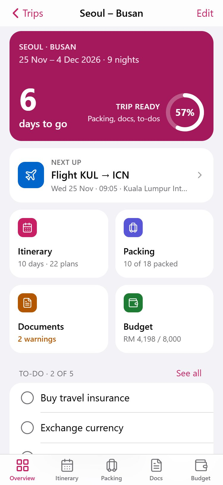
To-do: the first 3 items show here. Tap See all to add, rename or delete them, or pick a suggestion.
Plans and people NEW
Open the Itinerary tab. Add the people coming, then the plans for each day.
Add the people
Tap Add people on the travellers cardType a name and tap Add. Each person gets their own colour.
Add a plan
Tap a day in the strip, then
Type a title and place, then pick a categoryFlight, Transport, Drive, Stay, Food, Sightseeing or Free time.
Driving? Choose Drive and fill in From, To and about how longShows as "Kuantan → Cameron Highlands · about 4 h".
Under Handled by, pick a person and their roleBooked by, Buys tickets, Drives or In charge. It shows as a green label like Booked by Adam.
Set the time and tap Add
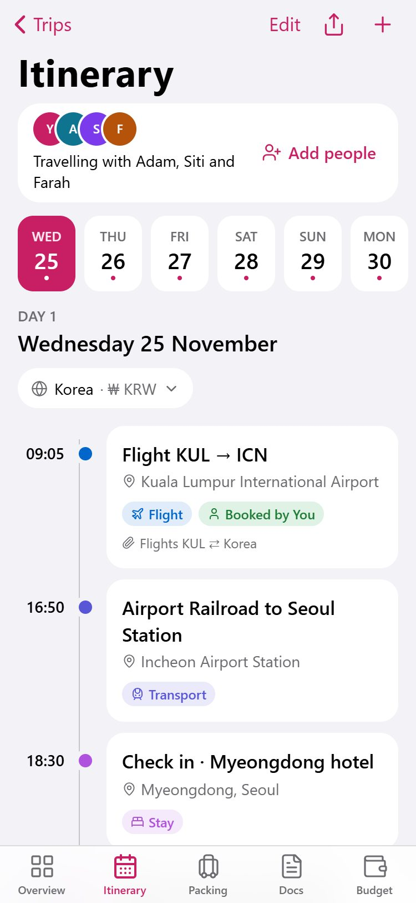
Tap a plan for Apple Maps or Google Maps directions. To change the order, tap Edit and use the arrows.
Pack your bag
Open the Packing tab. Tick things off as they go in the bag.
Tap an item to tick itIt turns green and gets crossed out. Tap again to undo.
Add your own with
Scroll down for suggestions and tap to addBased on trip length and where you go: a jacket for the highlands, swimwear for the beach, winter wear for cold countries.
Reuse your list next trip: ••• then Save as Template
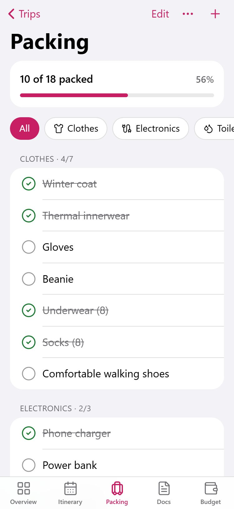
Keep your documents
Open the Docs tab. Save photos of tickets, bookings, your passport or IC so you have them without internet.
Tap and pick the typePassport, ticket, hotel booking, insurance, visa, IC / ID card or other.
Tap Add photo or PDFTake a photo, or choose a screenshot or PDF.
Set the status and tap AddGreen = Valid or Booked. Orange = To check or Missing.
Orange boxes warn you, for example when insurance is missing or a passport expires within 6 months of the trip. Domestic trips skip passport, visa and insurance warnings.
Want privacy? Settings → Set PIN for Documents locks this tab with 4 digits. At the bottom is an Emergency card you can share with family.
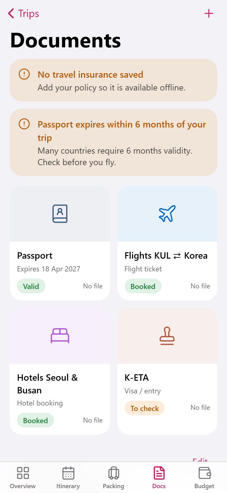
Track your own spending
Open the Budget tab and stay on My spending. This is your own money; the shared money lives in the Group fund.
Tap the round at the top right
Type the amount on the keypadAbroad, the green bubble shows it in RM straight away, like "₩ 15,000 → RM 45.99".
Pick a category and tap Add ExpenseOptional: a note, another date, or a photo of the receipt.
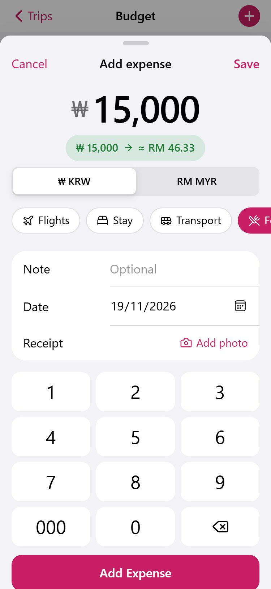
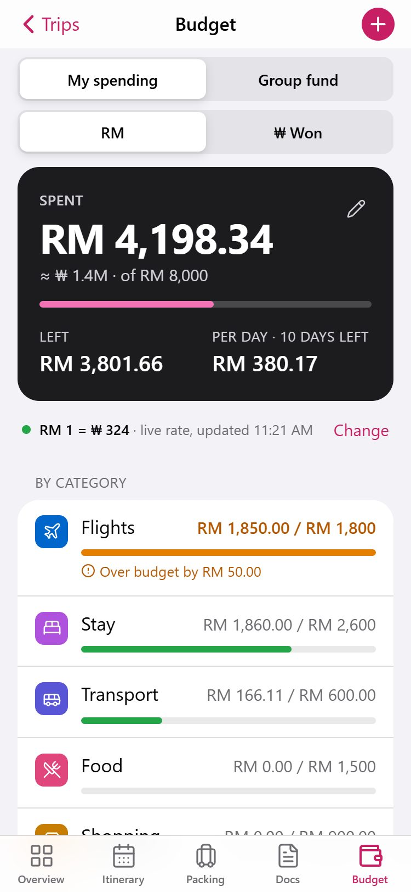
Reading the card
- Spent
- Everything you spent, plus your share of the group fund.
- Left
- Money still left in your budget.
- Per day
- How much you can spend each day for the rest of the trip.
- Rate line
- Abroad only, e.g. "RM 1 = ₩ 326 · live rate". Tap Change to use your money changer's rate or lock one rate for the trip.
- Group fund share
- Your part of shared costs, added automatically, so you never enter it twice.
Run the group fund NEW
One person, usually you, keeps the shared money and records it here. Everyone else just pays in. Open Budget → Group fund.
Record money
Tap the round , then choose one of three:
Money inSomeone pays into the fund. Pick who, and whether it was cash or transfer.
Paid from fundYou paid a shared cost with fund money. Pick the category and who shares it (everyone by default).
Someone paidA member paid for the group with their own money, e.g. Adam paid the toll. The fund now owes them.
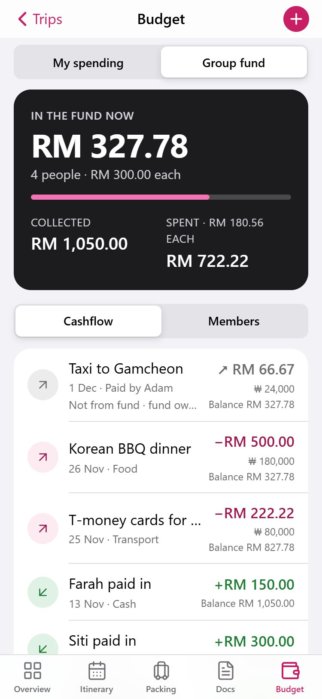
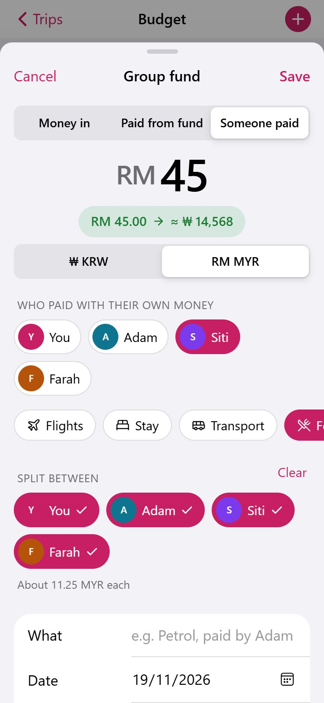
Who owes what
Tap Members. Jalan works it out for you.
- Paid
- Money they put in, plus anything they paid with their own money.
- Share
- Their part of every cost they were included in.
- Gets back
- They paid more than their share.
- Owes
- They paid less than their share (shown in orange).
- Still to pay
- They haven't paid the full amount per person yet. They also appear in your reminders.
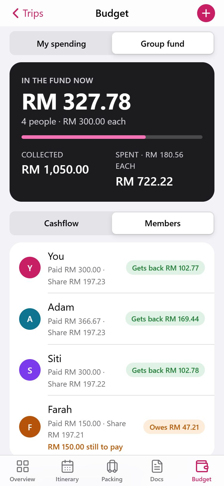
At the end of the trip, scroll down to Settle up. It lists the fewest transfers needed, like "The fund → Adam RM 109.67". When everyone is paid, tap Mark as settled.
At the bottom: Download PDF makes an A4 fund report (summary, members, settle up and every entry). WhatsApp sends a short summary with the last 5 entries.
Domestic trips NEW
For trips inside Malaysia, Jalan hides what you don't need. It switches on by itself when every stop is in Malaysia.
| Domestic | Abroad | |
|---|---|---|
| Money | All in RM, no exchange rates | RM and local currency, with rates |
| Budget | Adds Petrol, Toll, Parking | Flights, Stay, Food and more |
| Documents | Bookings, tickets, IC | Also passport, visa, insurance checks |
| To-do ideas | Service the car, top up Touch 'n Go | eSIM, currency, visa rules |
| Plans | Drive comes first | Flight check-in reminder |
| Packing | Jacket for highlands, swimwear for beach | By season of the country |
A week before a domestic trip, Jalan reminds you to service the car and top up Touch 'n Go.
Your profile and backups
Open Settings with the gear on the Trips screen.
Organiser profile NEW
Add your name or business name, phone, email and a logoThey appear on PDFs and at the end of WhatsApp messages. All optional.
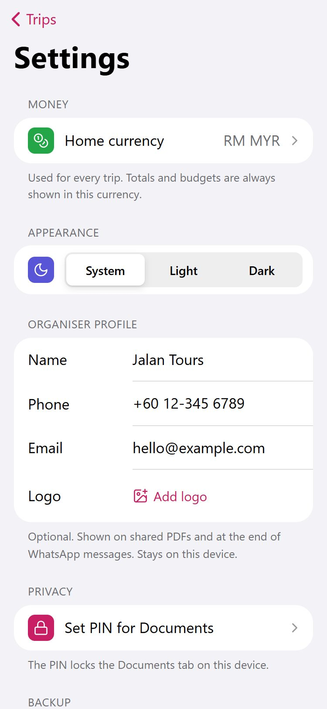
Back up once a month
Tap Export all dataSave the file to Files or iCloud Drive. It includes trips, people, the group fund and documents.
New phone? Tap Import backup and pick that file
Deleting the Jalan icon, or clearing Safari's website data, also deletes your trips. Back up first.
Questions
Do my travellers need the app?
No. Travellers are just names in your app. Send them the plan as a PDF or WhatsApp message.
Can my group see the costs?
Only what you choose to send. Shared plans never include costs or documents. The group fund summary is shared only when you tap it.
Does it work without internet?
Yes. After you open it once, everything works offline, including making PDFs. Only the live exchange rate needs internet, and the last rate is saved.
The Add or Create button does nothing
A country is missing. Tap Choose country under Destination, pick one, then tap Create.
Some place names are missing in the PDF
The PDF can only show Latin letters, so names written in Korean, Japanese, Chinese or Thai are left out there. WhatsApp messages and calendar events keep them.
How do I get the newest version?
Open Jalan, close it fully (swipe it away), then open it again. It updates by itself.
How do I remove the sample trip?
Go to Settings → Clear sample data. It removes the Seoul – Busan example.
Does Jalan send me notifications?
No. Reminders show in the orange "things to do" row when you open the app, so open it now and then.